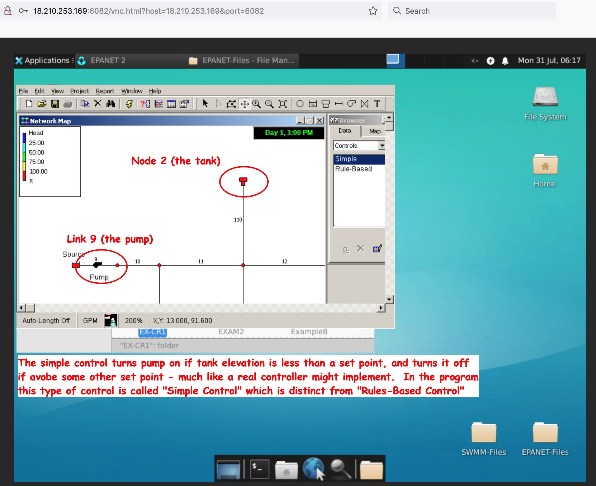

2.5 EPANET Control Rules#
Motivation#
Ten current (circa 2023) research problems in hydraulic network analysis and operations are listed below:
Research Problems
Real-time Optimization: Developing efficient algorithms and methodologies for real-time optimization of water distribution networks is an ongoing challenge. This involves dynamically adjusting control settings, such as valve positions and pump speeds, to optimize system performance based on changing demand patterns and operational conditions.
Water Quality Modeling: Enhancing the accuracy and reliability of water quality modeling in hydraulic networks is an active area of research. This includes improving the simulation of chemical reactions, contaminant transport, and disinfection processes to ensure the safety and quality of drinking water.
Resilience and Risk Assessment: Assessing the resilience and vulnerability of water distribution networks to various hazards, such as pipe failures, natural disasters, and deliberate attacks, remains a complex problem. Developing robust methodologies for risk assessment and optimization of network design to enhance system resilience is an ongoing challenge.
Sensor Placement and Data Assimilation: Optimally placing sensors in the network to gather real-time data and integrating this data into hydraulic models is a challenging task. Efficient techniques for sensor placement and data assimilation can improve system monitoring, leak detection, and fault diagnosis.
Integrated Energy Management: Integrating energy considerations into water distribution network operations is an emerging area of research. Developing optimization algorithms that consider both hydraulic performance and energy efficiency to achieve sustainable operation is an unsolved problem.
Multi-objective Optimization: Balancing multiple conflicting objectives, such as minimizing energy consumption, reducing water losses, and improving water quality, poses a significant challenge in hydraulic network analysis and operations. Developing efficient algorithms for multi-objective optimization can assist in decision-making for system planning and management.
Uncertainty Analysis: Incorporating uncertainty analysis into hydraulic network models is essential for robust decision-making. Addressing uncertainties related to demand patterns, pipe roughness, parameter estimation, and climate change effects is an ongoing research area.
Smart Water Grids: Exploring the potential of emerging technologies, such as Internet of Things (IoT), data analytics, and artificial intelligence, in optimizing water network operations and management is a frontier of research. Developing smart water grid frameworks and algorithms for automated control and optimization is an unsolved problem.
Optimal Design and Rehabilitation: Finding optimal designs for new network layouts or rehabilitating existing systems to meet evolving demands is a complex problem. Considering factors such as pipe sizing, network topology, and spatial constraints to achieve cost-effective and efficient designs is an ongoing challenge.
Interoperability and Data Integration: Integrating data from various sources, such as geographic information systems (GIS), hydraulic models, and operational databases, presents challenges in terms of data compatibility, standardization, and interoperability. Developing frameworks and methodologies for seamless data integration is an area that requires further attention.
Observe that several of the items require the ability to change control settings, such as valve positions and pump speeds. While these could concievably be done in the CLI mode, by automatically writing input files based on outputs just computed it is a common enough need that the EPANET programmer provided for control rules to be supplied within the computation engine - these controls are called rules in the software.
Note
While on the subject of unsolved problems, in my opinion at least half of those listed involve rules and change, so the original programmer was quite prescient in providing the rules capability in the original program!
Purpose#
In EPANET, rule-based controls are a set of user-defined conditions and actions that govern the behavior of specific elements within a water distribution system. These controls allow engineers to simulate automatic operation of pumps, valves, and other devices based on predefined rules, without requiring manual intervention.
The rules are established using a simple scripting language within EPANET’s input file. Each rule consists of two main components: a condition and an action. The condition specifies the criteria that must be met for the rule to be triggered, while the action dictates what operation should be performed when the condition is satisfied.
For example, a rule-based control could be defined to activate a pump when the water level in a specific tank drops below a certain threshold. Once this condition is met, the action will be executed, and the pump will start, ensuring that the tank is adequately filled.
By implementing rule-based controls, water distribution system operators can optimize the system’s performance, reduce energy consumption, and respond to dynamic changes in demand or other operational requirements automatically. It offers a flexible and efficient way to manage complex water distribution systems while ensuring their stability and reliability.
Installation#
None - Built into the program by design.
Example Net1.inp (supplied with EPANET)#
The first example is actually supplied with EPANET and is intended to illustrate some water quality features, but it also contains control rules so its worth an examination. In this section we will access via the GUI, so mostly screen captures from freeswmm.ddns.net
The input file is already on the shared resource so we simply connect and load the file so open the program and load the file as below
Notice where the file is located - if you installed a default EPANET onto your machine, the file we are using is called Net1.inp and should be in the Examples directory that EPANET creates.
Next lets look at the network layout in the GUI (the picture shows immediately after loading the file). The network has a supply node (the reservoir to the left) connected by a pump to the network of several pipes, and nodes, and a storage tank at the top of the network map.
We can verify that the network simulator runs by just running the simulation. In the image below I have requested a plot of the head (proportional to the water level) in Node 2 which is the tank in the picture.
Now if we examine the actual input file we see the following sections
[CONTROLS]
LINK 9 OPEN IF NODE 2 BELOW 110
LINK 9 CLOSED IF NODE 2 ABOVE 140
[RULES]
The controls section is listing “simple controls” and the rules section is null. So to interpret the simple control, lest first examine the network a bit closer as below

We see that node 2 is the tank, and link 9 is the pump. Open means a link is “connected” and “closed” is as if it were not there (it disconnects from the network)
The control syntax (in the GUI) is shown below which is of course identical to the input file code fragment above.
The values 110 and 140 refer to water levels in the tank, relative to its datum.
The picture below should help
In the Net1.inp file the tank information is
[TANKS]
;ID Elevation InitLevel MinLevel MaxLevel Diameter MinVol VolCurve
2 850 120 100 150 50.5 0 ;
In reference to the picture. Z = 850 (base elevation), the tank at lowest level (no storage) would have water level at 100 (tank head would be 950) at maximum level (most storage) would have water level at 150 (tank head would be 1000).
The simple control input instructs the program to run the pump in an attempt to keep the tank water levels between 110 and 140 depth units, which in this case would be 960 to 990 head units (as indicated by the graph of tank heads above).